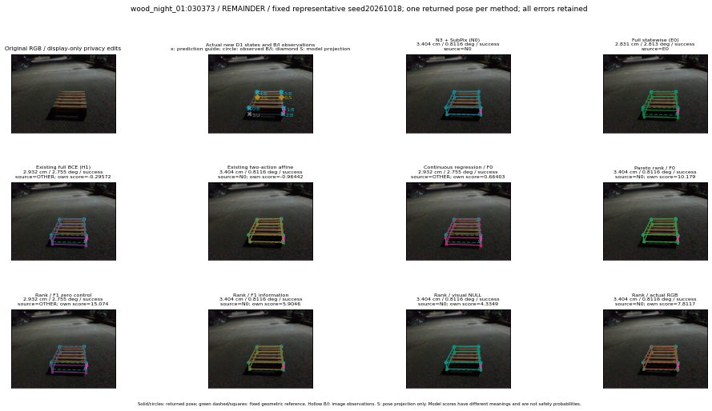

실선은 반환 자세, 초록 점선은 고정 기하 참조입니다. S는 영상 관측이 아닙니다. 점수는 모델별 의미가 다르며 보정된 안전 확률이 아닙니다. 개인정보 처리는 표시 사본에만 적용했습니다.
| 방법·seed | 위치 / 회전 / 공동성공 | 실제 출처 | 선택 후보 | 각 모델 자체 점수 |
|---|---|---|---|---|
| N0 | 3.404 cm / 0.8116 deg / success | N0 | N/A | N/A |
| E0 | 2.831 cm / 2.813 deg / success | E0 | N/A | N/A |
| E0_REGENERATED | 2.831 cm / 2.813 deg / success | E0 | E0_REGENERATED | N/A |
| POSEFIX_SUBPIX_PF_ANCHOR | 3.614 cm / 0.8874 deg / success | OTHER | N/A | N/A |
| POSEFIX_SUBPIX_YOLO_ANCHOR | 3.614 cm / 0.8874 deg / success | OTHER | N/A | N/A |
| D1_H1_MLP_s20261018 | 2.932 cm / 2.755 deg / success | OTHER | G10/ORIGINAL_WD/selected | -0.2957179844379425 |
| D1_H1_MLP_s20261019 | 2.932 cm / 2.755 deg / success | OTHER | G10/ORIGINAL_WD/selected | -0.6194955706596375 |
| D1_H1_MLP_s20261020 | 2.932 cm / 2.755 deg / success | OTHER | G10/ORIGINAL_WD/selected | -0.9949086904525757 |
| D1_H1_PAIR_MLP_s20261018 | 2.831 cm / 2.813 deg / success | E0 | E0_REGENERATED | -1.6818761825561523 |
| D1_H1_PAIR_MLP_s20261019 | 2.831 cm / 2.813 deg / success | E0 | E0_REGENERATED | -1.7047443389892578 |
| D1_H1_PAIR_MLP_s20261020 | 2.831 cm / 2.813 deg / success | E0 | E0_REGENERATED | -1.6138099431991577 |
| D1_H1_PAIR_ROLE_AFFINE_s20261018 | 3.404 cm / 0.8116 deg / success | N0 | N0 | -0.9644178748130798 |
| D1_H1_PAIR_ROLE_AFFINE_s20261019 | 3.404 cm / 0.8116 deg / success | N0 | N0 | -1.0969475507736206 |
| D1_H1_PAIR_ROLE_AFFINE_s20261020 | 3.404 cm / 0.8116 deg / success | N0 | N0 | -0.8964278697967529 |
| R_CONT_F0_s20261018 | 2.932 cm / 2.755 deg / success | OTHER | G10/ORIGINAL_WD/selected | 0.6640254855155945 |
| R_CONT_F0_s20261019 | 2.932 cm / 2.755 deg / success | OTHER | G10/ORIGINAL_WD/selected | 0.748727560043335 |
| R_CONT_F0_s20261020 | 2.932 cm / 2.755 deg / success | OTHER | G10/ORIGINAL_WD/selected | 0.6809234023094177 |
| R_ORDER_F0_s20261018 | 3.404 cm / 0.8116 deg / success | N0 | N0 | 10.179262161254883 |
| R_ORDER_F0_s20261019 | 2.932 cm / 2.755 deg / success | OTHER | G10/ORIGINAL_WD/selected | 3.796407699584961 |
| R_ORDER_F0_s20261020 | 2.932 cm / 2.755 deg / success | OTHER | G10/ORIGINAL_WD/selected | -7.182986259460449 |
| R_ORDER_F1_ZERO_s20261018 | 2.932 cm / 2.755 deg / success | OTHER | G10/ORIGINAL_WD/selected | 15.07414436340332 |
| R_ORDER_F1_ZERO_s20261019 | 2.932 cm / 2.755 deg / success | OTHER | G10/ORIGINAL_WD/selected | 10.482999801635742 |
| R_ORDER_F1_ZERO_s20261020 | 2.932 cm / 2.755 deg / success | OTHER | G10/ORIGINAL_WD/selected | 7.923342227935791 |
| R_ORDER_F1_s20261018 | 3.404 cm / 0.8116 deg / success | N0 | N0 | 5.90456485748291 |
| R_ORDER_F1_s20261019 | 3.404 cm / 0.8116 deg / success | N0 | N0 | 7.87786865234375 |
| R_ORDER_F1_s20261020 | 3.404 cm / 0.8116 deg / success | N0 | N0 | -0.621168851852417 |
| V_ORDER_NULL_s20261018 | 3.404 cm / 0.8116 deg / success | N0 | N0 | 4.334909439086914 |
| V_ORDER_NULL_s20261019 | 3.404 cm / 0.8116 deg / success | N0 | N0 | 2.9660630226135254 |
| V_ORDER_NULL_s20261020 | 2.932 cm / 2.755 deg / success | OTHER | G10/ORIGINAL_WD/selected | 3.062187433242798 |
| V_ORDER_RGB_s20261018 | 3.404 cm / 0.8116 deg / success | N0 | N0 | 7.8117170333862305 |
| V_ORDER_RGB_s20261019 | 3.404 cm / 0.8116 deg / success | N0 | N0 | 2.21079158782959 |
| V_ORDER_RGB_s20261020 | 3.404 cm / 0.8116 deg / success | N0 | N0 | -7.872462749481201 |